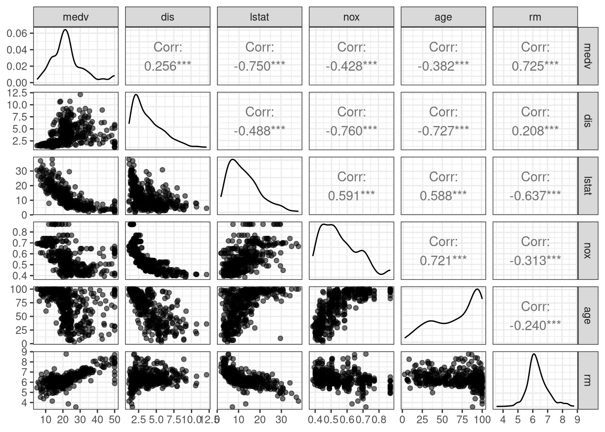
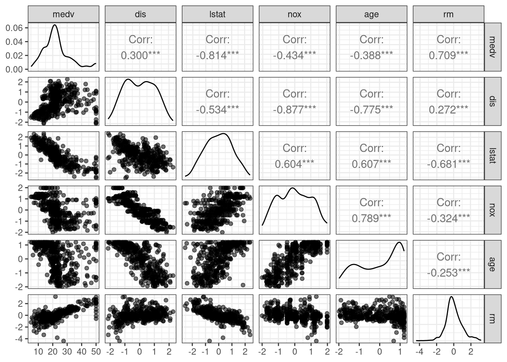
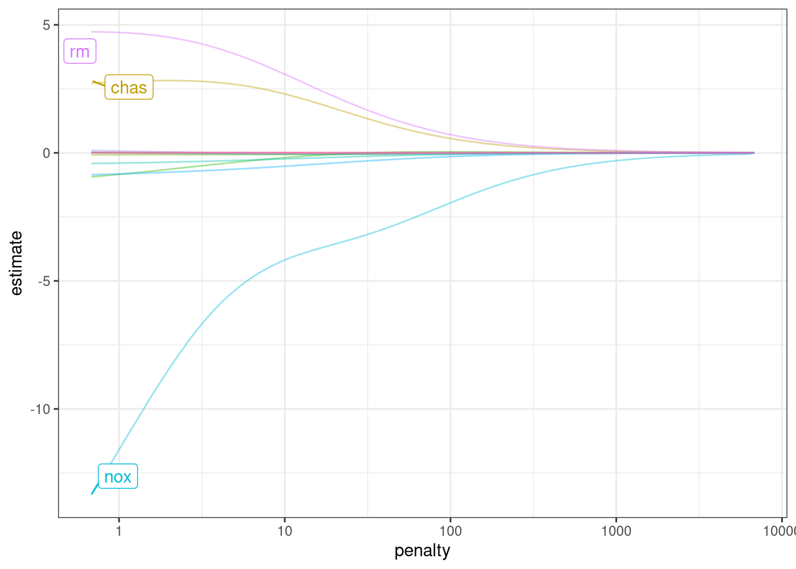
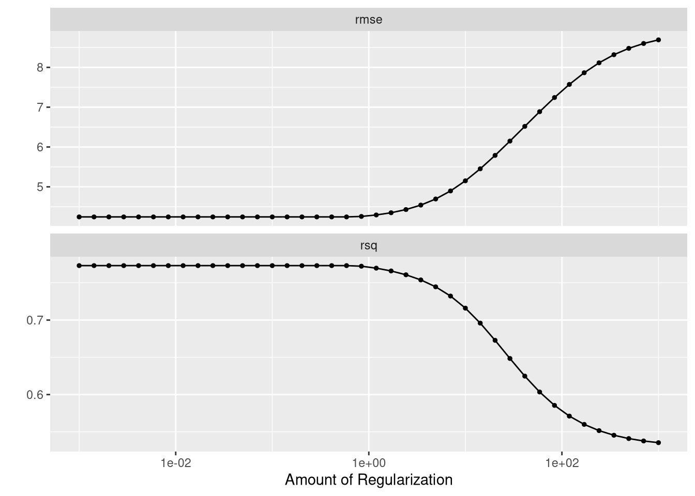
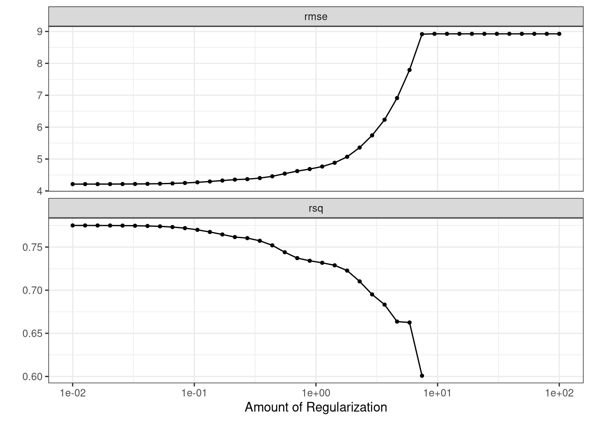

library(tidymodels)
library(MASS)
set.seed(3178)
boston_split <- initial_split(data = Boston, prop = 0.80)
boston_training <- training(boston_split)
boston_testing <- testing(boston_split)Linear Models & tidymodels
tidymodels does not natively support forward selection because it prefers alternative regularization and feature selection methods like Lasso. You would need to implement forward selection by manually adding predictor variables to your model recipe within tidymodels or use an alternative R package designed for stepwise regression.
Why tidymodels doesn’t support forward selection:
Preference for Regularization: tidymodels developers and the broader tidymodels community consider regularization methods (like Lasso) to be superior to stepwise selection for feature selection.
“Locally Optimal” Nature: Forward selection is a “locally optimal” approach, meaning it finds the best model at each step but doesn’t guarantee the globally optimal model. Regularization methods provide a more democratic way to handle coefficients.
Goes Against Tidy Philosophy: Manually controlling the stepwise selection process in tidymodels can feel like it goes against the framework’s philosophy of a streamlined, data-driven workflow.
How to perform feature selection with tidymodels:
Use Regularization: Fit a regularized model like Lasso using parsnip, and the regularization process will perform feature selection by shrinking some coefficients to zero.
Manual Selection: You can manually select features by defining a recipe with the chosen predictors using recipes and then train the model with that specific recipe.
Use External Packages: For true forward selection, you would use other R packages that specifically offer stepwise regression, such as the StepReg package on CRAN.
The tidymodels philosophy
The tidymodels framework is designed around a more consistent and robust approach to modeling than traditional stepwise procedures. Key aspects of this philosophy that lead away from forward selection include:
Encourages superior methods: The developers prioritize methods like regularization, which are more stable and produce better predictive models than automated stepwise selection.
Consistency: A core tenet of tidymodels is to have a uniform interface across different modeling engines. Stepwise procedures, which involve fitting many different model formulas, do not fit neatly into this framework.
Reduced overfitting: Automatic stepwise selection can lead to models that overfit the training data. Regularization techniques like Lasso are designed to prevent this by shrinking coefficients toward zero or setting them to exactly zero, resulting in sparser and more stable models.
Recommended alternatives to forward selection
Instead of stepwise methods, the tidymodels framework provides several powerful and well-integrated tools for handling feature selection and model complexity.
Regularization with Lasso
This is the main alternative recommended by the tidymodels developers. Lasso regression performs variable selection by shrinking some coefficients all the way to zero.
Model specification: Use
linear_reg()with the mixture argument set to 1.Engine: Specify the
glmnetengine, which is highly efficient for fitting many values of the penalty simultaneously.Tuning: Use
tune_grid()to find the optimal value of the penalty hyperparameter.Workflow: The entire process is integrated smoothly into a tidymodels workflow, from preprocessing with recipes to resampling with rsample and tuning with tune.
Example R code using Lasso: Emil Hvitfeldt provides example R code using Lasso for feature selection with tidymodels.
Working with Data
Visualizing and Checking Data
library(MASS)
library(GGally)
ggpairs(data = boston_training,
columns = c("medv", "dis", "lstat", "nox", "age", "rm"),
aes(alpha = 0.01)) +
theme_bw()
boston_recipe <-
recipe(formula = medv ~ ., data = boston_training) |>
step_BoxCox(all_numeric_predictors()) |>
step_normalize(all_numeric_predictors())
boston_recipetidy(boston_recipe)# A tibble: 2 × 6
number operation type trained skip id
<int> <chr> <chr> <lgl> <lgl> <chr>
1 1 step BoxCox FALSE FALSE BoxCox_ZQrKj
2 2 step normalize FALSE FALSE normalize_UuPWIboston_rec_trained <- prep(boston_recipe, boston_training)
boston_rec_trainedboston_trained_data <- bake(boston_rec_trained, new_data = NULL)
boston_trained_data# A tibble: 404 × 14
crim zn indus chas nox rm age dis rad tax
<dbl> <dbl> <dbl> <dbl> <dbl> <dbl> <dbl> <dbl> <dbl> <dbl>
1 -0.0175 -0.485 -0.364 -0.278 -0.422 0.187 -1.07 0.717 -0.239 -0.594
2 0.807 -0.485 1.17 -0.278 1.98 -0.942 1.19 -1.50 -0.239 0.329
3 -0.0847 -0.485 -0.577 -0.278 -0.300 1.86 -1.72 0.104 0.324 -0.395
4 0.132 -0.485 -0.577 -0.278 -0.300 1.52 0.240 0.261 0.324 -0.395
5 1.49 -0.485 1.02 -0.278 0.676 -0.0732 0.688 -0.970 1.47 1.39
6 0.664 -0.485 1.17 3.59 0.610 2.71 0.934 -0.762 -0.239 0.329
7 -0.261 -0.485 -0.170 -0.278 -0.132 -0.203 0.663 -0.311 -0.239 0.209
8 -0.557 -0.485 -0.446 -0.278 -0.986 -0.300 -1.08 1.05 -0.905 -1.26
9 -0.0317 -0.485 -0.577 -0.278 -0.268 2.56 -0.0121 0.251 0.324 -0.395
10 0.0213 0.438 -0.642 -0.278 -1.23 2.57 -1.90 1.79 0.169 -0.191
# ℹ 394 more rows
# ℹ 4 more variables: ptratio <dbl>, black <dbl>, lstat <dbl>, medv <dbl>ggpairs(data = boston_trained_data,
columns = c("medv", "dis", "lstat", "nox", "age", "rm"),
aes(alpha = 0.01)) +
theme_bw()
Resampling
Goal is to predict medv.
lm_spec <- linear_reg() |>
set_mode("regression") |>
set_engine("lm")First we will ignore the previously normalized and transformed variables and use the raw data. Then, we will go back and use the previous boston_recipe with the transormations and normaliztions to see how the models compare.
lm_fit <- lm_spec |>
fit(medv ~ ., data = boston_training)augment(lm_fit, new_data = boston_testing)# A tibble: 102 × 16
.pred .resid crim zn indus chas nox rm age dis rad tax
<dbl> <dbl> <dbl> <dbl> <dbl> <int> <dbl> <dbl> <dbl> <dbl> <int> <dbl>
1 30.4 -6.44 0.00632 18 2.31 0 0.538 6.58 65.2 4.09 1 296
2 25.0 -3.40 0.0273 0 7.07 0 0.469 6.42 78.9 4.97 2 242
3 25.4 3.31 0.0298 0 2.18 0 0.458 6.43 58.7 6.06 3 222
4 11.8 4.66 0.211 12.5 7.87 0 0.524 5.63 100 6.08 5 311
5 16.6 0.892 0.784 0 8.14 0 0.538 5.99 81.7 4.26 4 307
6 15.3 0.324 0.750 0 8.14 0 0.538 5.92 94.1 4.40 4 307
7 23.2 -2.16 0.0801 0 5.96 0 0.499 5.85 41.5 3.93 5 279
8 22.3 -2.98 0.171 0 6.91 0 0.448 5.68 33.8 5.10 3 233
9 18.0 -1.39 0.229 0 6.91 0 0.448 6.03 85.5 5.69 3 233
10 28.2 -3.24 0.0536 21 5.64 0 0.439 6.51 21.1 6.81 4 243
# ℹ 92 more rows
# ℹ 4 more variables: ptratio <dbl>, black <dbl>, lstat <dbl>, medv <dbl>augment(lm_fit, new_data = boston_testing) |>
rmse(truth = medv, estimate = .pred) -> T1
T1# A tibble: 1 × 3
.metric .estimator .estimate
<chr> <chr> <dbl>
1 rmse standard 5.19Compare to the training RMSE:
augment(lm_fit, new_data = boston_training) |>
rmse(truth = medv, estimate = .pred) -> T2
T2# A tibble: 1 × 3
.metric .estimator .estimate
<chr> <chr> <dbl>
1 rmse standard 4.56Note that we expect the training data to provide and overly optimistic estimate of the RMSE which in fact is what happens in this case where we see the \(\text{RMSE}_{\text{Train}} = 4.5623312\) and \(\text{RMSE}_{\text{Test}} = 5.1893357\).
Consider what happens when we preprocess the data using recipe().
boston_recipe <-
recipe(formula = medv ~ ., data = boston_training) |>
step_BoxCox(all_numeric_predictors()) |>
step_normalize(all_numeric_predictors())
boston_wkfl <- workflow() |>
add_recipe(boston_recipe) |>
add_model(lm_spec)
boston_wkfl══ Workflow ════════════════════════════════════════════════════════════════════
Preprocessor: Recipe
Model: linear_reg()
── Preprocessor ────────────────────────────────────────────────────────────────
2 Recipe Steps
• step_BoxCox()
• step_normalize()
── Model ───────────────────────────────────────────────────────────────────────
Linear Regression Model Specification (regression)
Computational engine: lm boston_fit <- fit(boston_wkfl, data = boston_training)
augment(boston_fit, new_data = boston_testing) |>
rmse(truth = medv, estimate = .pred)# A tibble: 1 × 3
.metric .estimator .estimate
<chr> <chr> <dbl>
1 rmse standard 4.58augment(boston_fit, new_data = boston_training) |>
rmse(truth = medv, estimate = .pred)# A tibble: 1 × 3
.metric .estimator .estimate
<chr> <chr> <dbl>
1 rmse standard 4.29Consider what happens if the seed is changed with the initial_split().
set.seed(3)
boston_split <- initial_split(data = Boston, prop = 0.80)
boston_training <- training(boston_split)
boston_testing <- testing(boston_split)
lm_fit <- lm_spec |>
fit(medv ~ ., data = boston_training)
augment(lm_fit, new_data = boston_testing)# A tibble: 102 × 16
.pred .resid crim zn indus chas nox rm age dis rad tax
<dbl> <dbl> <dbl> <dbl> <dbl> <int> <dbl> <dbl> <dbl> <dbl> <int> <dbl>
1 17.0 0.529 0.784 0 8.14 0 0.538 5.99 81.7 4.26 4 307
2 14.2 0.330 0.988 0 8.14 0 0.538 5.81 100 4.10 4 307
3 15.9 -0.319 0.750 0 8.14 0 0.538 5.92 94.1 4.40 4 307
4 11.9 0.760 1.13 0 8.14 0 0.538 5.71 94.1 4.23 4 307
5 18.2 -3.74 1.35 0 8.14 0 0.538 6.07 100 4.18 4 307
6 14.4 -1.31 1.15 0 8.14 0 0.538 5.70 95 3.79 4 307
7 14.4 -0.928 1.61 0 8.14 0 0.538 6.10 96.9 3.76 4 307
8 22.1 -1.14 0.0801 0 5.96 0 0.499 5.85 41.5 3.93 5 279
9 22.0 2.69 0.175 0 5.96 0 0.499 5.97 30.2 3.85 5 279
10 24.7 0.599 0.142 0 6.91 0 0.448 6.17 6.6 5.72 3 233
# ℹ 92 more rows
# ℹ 4 more variables: ptratio <dbl>, black <dbl>, lstat <dbl>, medv <dbl>augment(lm_fit, new_data = boston_testing) |>
rmse(truth = medv, estimate = .pred) -> T3
T3# A tibble: 1 × 3
.metric .estimator .estimate
<chr> <chr> <dbl>
1 rmse standard 6.24augment(lm_fit, new_data = boston_training) |>
rmse(truth = medv, estimate = .pred) -> T4
T4# A tibble: 1 × 3
.metric .estimator .estimate
<chr> <chr> <dbl>
1 rmse standard 4.26boston_recipe <-
recipe(formula = medv ~ ., data = boston_training) |>
step_BoxCox(all_numeric_predictors()) |>
step_normalize(all_numeric_predictors())
boston_wkfl <- workflow() |>
add_recipe(boston_recipe) |>
add_model(lm_spec)
boston_fit <- fit(boston_wkfl, data = boston_training)
augment(boston_fit, new_data = boston_testing) |>
rmse(truth = medv, estimate = .pred)# A tibble: 1 × 3
.metric .estimator .estimate
<chr> <chr> <dbl>
1 rmse standard 5.70augment(boston_fit, new_data = boston_training) |>
rmse(truth = medv, estimate = .pred)# A tibble: 1 × 3
.metric .estimator .estimate
<chr> <chr> <dbl>
1 rmse standard 4.08k-Fold Cross-Validation
set.seed(23)
boston_folds <- vfold_cv(boston_training, v = 10, repeats = 3)
boston_folds# 10-fold cross-validation repeated 3 times
# A tibble: 30 × 3
splits id id2
<list> <chr> <chr>
1 <split [363/41]> Repeat1 Fold01
2 <split [363/41]> Repeat1 Fold02
3 <split [363/41]> Repeat1 Fold03
4 <split [363/41]> Repeat1 Fold04
5 <split [364/40]> Repeat1 Fold05
6 <split [364/40]> Repeat1 Fold06
7 <split [364/40]> Repeat1 Fold07
8 <split [364/40]> Repeat1 Fold08
9 <split [364/40]> Repeat1 Fold09
10 <split [364/40]> Repeat1 Fold10
# ℹ 20 more rowsboston_wkfl |>
fit_resamples(
resamples = boston_folds,
metrics = metric_set(rmse, mae, rsq),
control = control_resamples(save_pred = TRUE)
) -> tenbyfive
tenbyfive |> collect_predictions() |>
metrics(truth = medv, estimate = .pred) # A tibble: 3 × 3
.metric .estimator .estimate
<chr> <chr> <dbl>
1 rmse standard 4.27
2 rsq standard 0.775
3 mae standard 3.15 Ridge Regression
ridge_spec <- linear_reg(mixture = 0, penalty = 0) |>
set_mode("regression") |>
set_engine("glmnet")
ridge_fit <- fit(ridge_spec, medv ~ ., data = boston_training)
tidy(ridge_fit)# A tibble: 14 × 3
term estimate penalty
<chr> <dbl> <dbl>
1 (Intercept) 22.7 0
2 crim -0.0822 0
3 zn 0.0300 0
4 indus 0.0121 0
5 chas 2.73 0
6 nox -13.4 0
7 rm 4.73 0
8 age 0.00226 0
9 dis -0.935 0
10 rad 0.0991 0
11 tax -0.00556 0
12 ptratio -0.853 0
13 black 0.00764 0
14 lstat -0.414 0Consider what happens as the penalty increases in the graph below.
ridge_fit |>
autoplot() +
theme_bw()
predict(ridge_fit, new_data = boston_training, penalty = 1)# A tibble: 404 × 1
.pred
<dbl>
1 33.6
2 23.8
3 17.6
4 18.5
5 22.6
6 26.2
7 19.3
8 16.0
9 18.0
10 16.4
# ℹ 394 more rowspredict(ridge_fit, new_data = boston_training, penalty = 10)# A tibble: 404 × 1
.pred
<dbl>
1 29.9
2 23.9
3 18.5
4 18.4
5 22.8
6 24.7
7 18.9
8 16.7
9 17.6
10 17.1
# ℹ 394 more rowspredict(ridge_fit, new_data = boston_training, penalty = 100)# A tibble: 404 × 1
.pred
<dbl>
1 24.4
2 23.2
3 20.8
4 20.6
5 22.8
6 22.9
7 20.9
8 19.9
9 20.1
10 20.0
# ℹ 394 more rowspredict(ridge_fit, new_data = boston_training, penalty = 1000)# A tibble: 404 × 1
.pred
<dbl>
1 22.6
2 22.5
3 22.1
4 22.1
5 22.4
6 22.4
7 22.1
8 22.0
9 22.0
10 22.0
# ℹ 394 more rowsSo how to we find the “best” penalty? We can use tuning to find the best hyperparameter. For now, we will only consider a grid search with evenly spaced parameter values to optimize our model.
ridge_recipe <-
recipe(formula = medv ~ ., data = boston_training) |>
step_BoxCox(all_numeric_predictors()) |>
step_normalize(all_numeric_predictors())
ridge_spec <-
linear_reg(penalty = tune(), mixture = 0) |>
set_mode("regression") |>
set_engine("glmnet")
ridge_wf <- workflow() |>
add_recipe(ridge_recipe) |>
add_model(ridge_spec)We need values of the penalty. Looking at the graph from autoplot(), we select values from 1 to 1000 using grid_regular() which will create a grid of evenly spaced values.
penalty_grid <- grid_regular(penalty(range = c(-5, 5)), levels = 40)
penalty_grid# A tibble: 40 × 1
penalty
<dbl>
1 0.00001
2 0.0000180
3 0.0000326
4 0.0000588
5 0.000106
6 0.000191
7 0.000346
8 0.000624
9 0.00113
10 0.00203
# ℹ 30 more rowstune_result <- tune_grid(
ridge_wf,
resamples = boston_folds,
grid = penalty_grid
)
tune_result# Tuning results
# 10-fold cross-validation repeated 3 times
# A tibble: 30 × 5
splits id id2 .metrics .notes
<list> <chr> <chr> <list> <list>
1 <split [363/41]> Repeat1 Fold01 <tibble [80 × 5]> <tibble [8 × 4]>
2 <split [363/41]> Repeat1 Fold02 <tibble [80 × 5]> <tibble [8 × 4]>
3 <split [363/41]> Repeat1 Fold03 <tibble [80 × 5]> <tibble [8 × 4]>
4 <split [363/41]> Repeat1 Fold04 <tibble [80 × 5]> <tibble [8 × 4]>
5 <split [364/40]> Repeat1 Fold05 <tibble [80 × 5]> <tibble [8 × 4]>
6 <split [364/40]> Repeat1 Fold06 <tibble [80 × 5]> <tibble [8 × 4]>
7 <split [364/40]> Repeat1 Fold07 <tibble [80 × 5]> <tibble [8 × 4]>
8 <split [364/40]> Repeat1 Fold08 <tibble [80 × 5]> <tibble [8 × 4]>
9 <split [364/40]> Repeat1 Fold09 <tibble [80 × 5]> <tibble [8 × 4]>
10 <split [364/40]> Repeat1 Fold10 <tibble [80 × 5]> <tibble [8 × 4]>
# ℹ 20 more rows
There were issues with some computations:
- Warning(s) x150: A correlation computation is required, but `estimate` is constant...
- Warning(s) x30: Fewer than `num_unique` values in selected variable.
- Warning(s) x30: No Box-Cox transformation could be estimated for: `zn` and `chas`.
- Warning(s) x30: Non-positive values in selected variable.
Run `show_notes(.Last.tune.result)` for more information.autoplot(tune_result)
collect_metrics(tune_result)# A tibble: 80 × 7
penalty .metric .estimator mean n std_err .config
<dbl> <chr> <chr> <dbl> <int> <dbl> <chr>
1 0.00001 rmse standard 4.24 30 0.155 pre0_mod01_post0
2 0.00001 rsq standard 0.773 30 0.0143 pre0_mod01_post0
3 0.0000180 rmse standard 4.24 30 0.155 pre0_mod02_post0
4 0.0000180 rsq standard 0.773 30 0.0143 pre0_mod02_post0
5 0.0000326 rmse standard 4.24 30 0.155 pre0_mod03_post0
6 0.0000326 rsq standard 0.773 30 0.0143 pre0_mod03_post0
7 0.0000588 rmse standard 4.24 30 0.155 pre0_mod04_post0
8 0.0000588 rsq standard 0.773 30 0.0143 pre0_mod04_post0
9 0.000106 rmse standard 4.24 30 0.155 pre0_mod05_post0
10 0.000106 rsq standard 0.773 30 0.0143 pre0_mod05_post0
# ℹ 70 more rowsbest_penalty <- select_best(tune_result, metric = "rmse")
best_penalty# A tibble: 1 × 2
penalty .config
<dbl> <chr>
1 0.00001 pre0_mod01_post0ridge_final <- finalize_workflow(ridge_wf, best_penalty)
ridge_final_fit <- fit(ridge_final, data = boston_training)
augment(ridge_final_fit, new_data = boston_testing) |>
metrics(truth = medv, estimate = .pred)# A tibble: 3 × 3
.metric .estimator .estimate
<chr> <chr> <dbl>
1 rmse standard 6.00
2 rsq standard 0.637
3 mae standard 3.87 The LASSO
To specify the LASSO use mixture = 1.
lasso_recipe <-
recipe(formula = medv ~ ., data = boston_training) |>
step_BoxCox(all_numeric_predictors()) |>
step_normalize(all_numeric_predictors())
lasso_spec <-
linear_reg(penalty = tune(), mixture = 1) |>
set_mode("regression") |>
set_engine("glmnet")
lasso_wf <- workflow() |>
add_recipe(lasso_recipe) |>
add_model(lasso_spec)penalty_grid <- grid_regular(penalty(range = c(-2, 2)), levels = 40)tune_res <- tune_grid(
lasso_wf,
resamples = boston_folds,
grid = penalty_grid
)
autoplot(tune_res) +
theme_bw()
best_penalty <- select_best(tune_res, metric = "rmse")
lasso_final <- finalize_workflow(lasso_wf, best_penalty)
lasso_final_fit <- fit(lasso_final, data = boston_training)
augment(lasso_final_fit, new_data = boston_testing) |>
metrics(truth = medv, estimate = .pred)# A tibble: 3 × 3
.metric .estimator .estimate
<chr> <chr> <dbl>
1 rmse standard 5.71
2 rsq standard 0.671
3 mae standard 3.90 Elastic net
enet_recipe <-
recipe(formula = medv ~ ., data = boston_training) |>
step_BoxCox(all_numeric_predictors()) |>
step_normalize(all_numeric_predictors())
enet_spec <-
linear_reg(penalty = tune()) |>
set_mode("regression") |>
set_engine("glmnet")
enet_wf <- workflow() |>
add_recipe(enet_recipe) |>
add_model(enet_spec)
penalty_grid <- grid_regular(penalty(range = c(-2, 2)), levels = 40)
tune_res <- tune_grid(
enet_wf,
resamples = boston_folds,
grid = penalty_grid
)best_penalty <- select_best(tune_res, metric = "rmse")
enet_final <- finalize_workflow(enet_wf, best_penalty)
enet_final_fit <- fit(enet_final, data = boston_training)
augment(enet_final_fit, new_data = boston_testing) |>
metrics(truth = medv, estimate = .pred)# A tibble: 3 × 3
.metric .estimator .estimate
<chr> <chr> <dbl>
1 rmse standard 5.71
2 rsq standard 0.671
3 mae standard 3.90